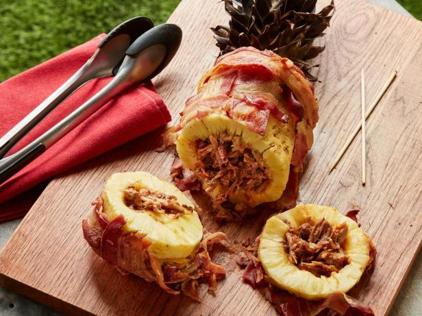

Pork in pineapple is not only a combination of amazing flavors but also a beautiful presentation. Guests will be amazed. The pineapple is peeled and stuffed with meat trimmed from cooked pork ribs. Then it's wrapped in a bacon rack, which, after grilling, will resemble a pineapple skin. Don't throw away the green top; it will make the dish look even more interesting. During baking, the meat inside will warm up along with the released pineapple juices, becoming even more tender, and the bacon "rind" will become super crispy. Serve the Pork in Pineapple, cut into neat rings—meat and a juicy side dish all in one.
Preheat grill to medium heat, preparing indirect heat zone.
Using a sharp knife, trim the top and bottom of the pineapple and set them aside. Trim the pineapple peel into strips. Using a small knife, hollow out the pineapple, leaving a 2 cm thick wall.
Stuff the pineapple with pork. Place the top and bottom halves of the pineapple in place and secure them with four long bamboo skewers.
Place a large sheet of parchment paper on a work surface. Lay 6 slices of bacon horizontally on the paper. The edges of the slices should touch but not overlap. Working with the remaining 6 slices, weave the bacon, lifting alternating horizontal slices and placing a slice of bacon vertically over or under the horizontal ones to create a lattice pattern. Wrap the bacon lattice around the pineapple and secure it with 8 long bamboo skewers. Trim the protruding ends of the skewers to 1 cm with kitchen scissors.
Place the pineapple and pork on the grill over a drip tray placed under the grate. Close the grill and cook until the bacon is browned and crispy and the meat is heated through, about 1 hour. Then transfer to a cutting board. Remove the skewers, slice the pineapple into rings, and serve.